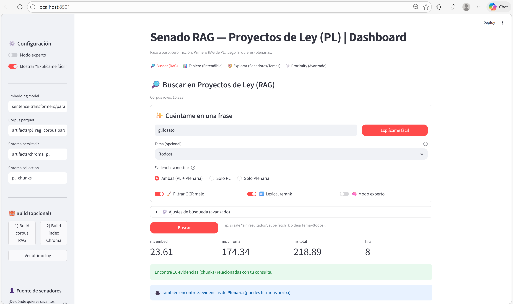
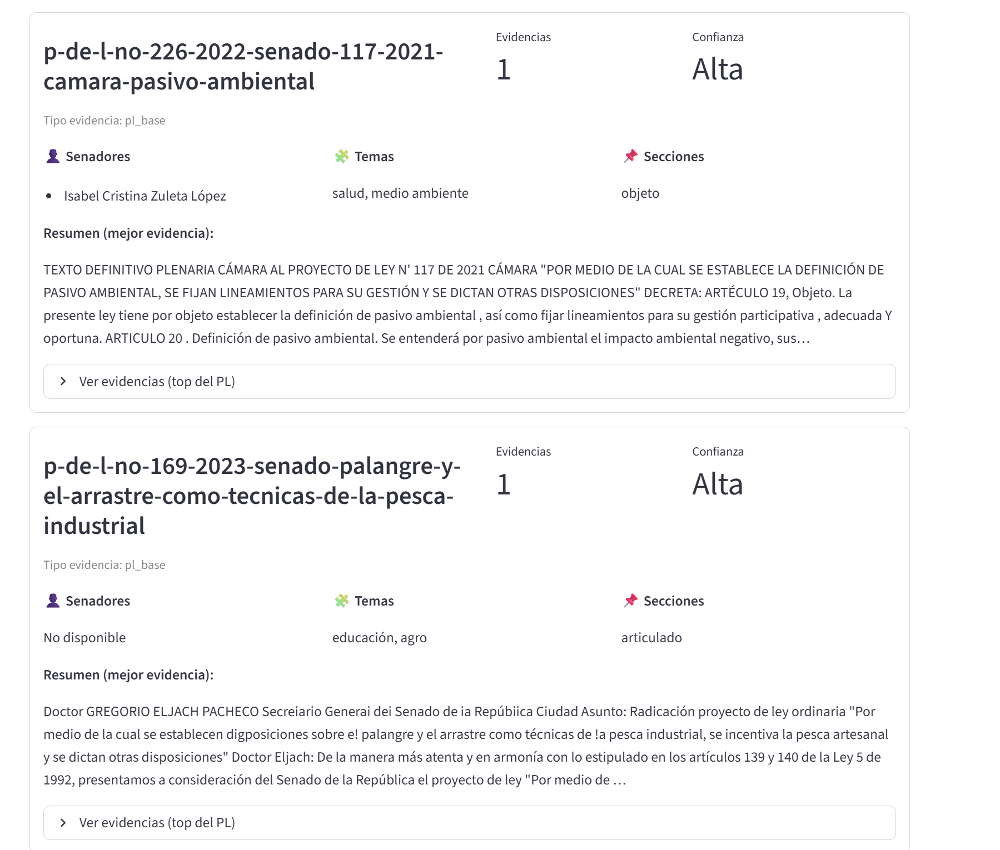
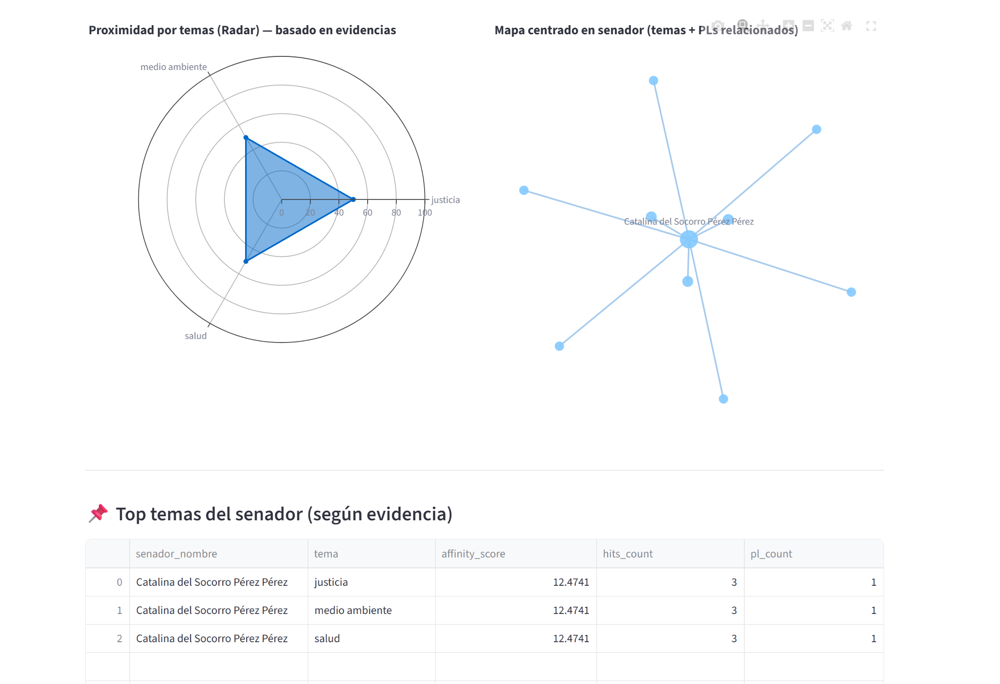

🔎
Búsqueda semántica
Recupera proyectos de ley y plenarias desde preguntas en lenguaje natural usando embeddings e indexación vectorial.
Senado RAG Dashboard integra búsqueda semántica, evidencia documental, analítica visual y perfiles de senadores para convertir datos legislativos en una experiencia navegable, comprensible y útil.
No es solo un dashboard. Es una capa de inteligencia sobre información legislativa, diseñada para explorar evidencia, participación y temas con mayor claridad.
Recupera proyectos de ley y plenarias desde preguntas en lenguaje natural usando embeddings e indexación vectorial.
Relaciona proyectos, roles, partido, departamento y evidencia, generando una vista más rica de la actividad legislativa.
Muestra afinidad temática, relaciones y señales interpretables mediante gráficos interactivos y estructuras visuales.
Usa aquí tus capturas del proyecto. Esta sección ya está lista para que el repo se vea más sólido, moderno y cercano a un producto real.

Vista general del sistema y entrada principal de exploración. Búsqueda semántica sobre proyectos de ley y evidencia legislativa.
Búsqueda semántica sobre proyectos de ley y evidencia legislativa.

Relación entre evidencia recuperada, perfiles de senadores y metadatos.
Gráficos de afinidad temática y lectura visual del comportamiento legislativo.El sistema combina procesamiento documental, generación de embeddings, persistencia vectorial y experiencia visual para transformar documentos en una interfaz analítica.
Documentos legislativos, corpus de plenarias y metadatos de senadores.
Limpieza, estructuración y consolidación de corpus en formatos operativos.
Representación semántica de texto con modelos multilingües.
Indexación vectorial para recuperación contextual y búsqueda eficiente.
Interfaz Streamlit con evidencia, gráficos, filtros y contexto ampliado.
El proyecto une infraestructura ligera, NLP y visualización para ofrecer una experiencia de análisis aplicada al sector público.
Este repositorio no busca mostrar solo código. Busca evidenciar una aplicación real de IA para análisis legislativo, transparencia, investigación y exploración documental estratégica.